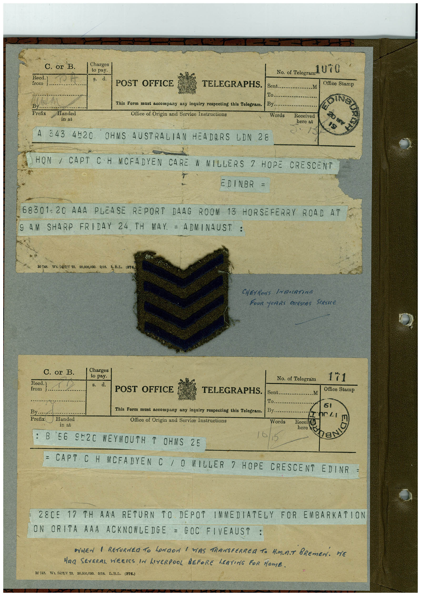

Book 1 · scan 000


Description
Transcription
Context
Review notes
Compare the machine draft with the scan. Handwriting and names need human review.
Artifacts
Edit the artifacts field in this note’s frontmatter to change these records. This summary is generated.
B01-S000-A01 — Telegram & Handwritten note — Book 1, scan 000
Types: Telegram, Handwritten note
Scope: Whole scanned page; individual items can be split out during review.
Caption: Not mapped yet.
Caption source: Not recorded yet.
Caption status: unmapped
Machine transcription
C. or B Reed. from By Prefix Charges to pay. d. Handed in at POST OFFICE TELEGRAPHS. This Form must accompany any inquiry respecting this Telegram. Office of Origin and Service Instructions 343 4H20 OHMS AUSTRALIAN HEADORS LDN 28 Sent. 1o. By. Words No. of Telegram U TO .M Office Stamp OING Received here at HON / CAPT CH MCFADYEN CARE W MILLERS 7 HOPE CRESCENT EDINBR = 68301-20 AAA PLEASE REPORT DAAG ROOM 13 HORSEFERRY ROAD AT AM SHARP FRIDAY 24 , TH MAY. = ADMINAUST : D1 748. Wt. 0457/Y 70. 20,000,000. 9/18, To.B.L, (374,) CHEVRONS INRICATING FoUR YeARS DERSEAS StRICe C. or B. Reed. from j. I Charges to pay. s. d. POST OFFICE No. of Telegram .... TELEGRAPHS. Sent... To.. By. .M 171 Office Stamp By... Prefix Handed in at This Form must accompany any inquiry respecting this Telegram. Office of Origin and Service Instructions ne LI Words Received here B 56 9º20 WEYMOUTH T OHMS 25 8 = CAPT CH MCFADYEN C / O MILLER 7 HOPE CRESCENT EDINR = 28C5 17 TH AAA RETURN TO DEPOT IMMEDIATELY FOR EMBARKATION ON ORITA AAA ACKNOWLEDGE = GOC FIVEAUST : AHEN | RETURNRO TO LONDON / WAS TRANSFERREA TO H.M.R.T BREMEN. HE MAn SEVERAL WEEIS IN LIVERPOOL BEFORE LEAVING FOR HOME. M 748. Wt. 9457/V 70. 20,000,000. 9/18. L.B.D. (374.)